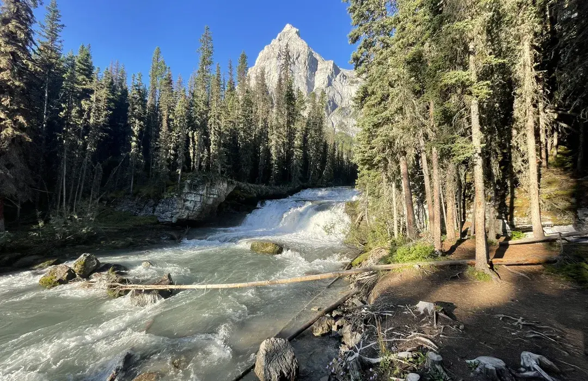

Trailhead Map & Live Weather

Live Trail Weather
Real-time weather for a sample trailhead near Kananaskis, Alberta.
Loading live weather data…

Real-time weather for a sample trailhead near Kananaskis, Alberta.